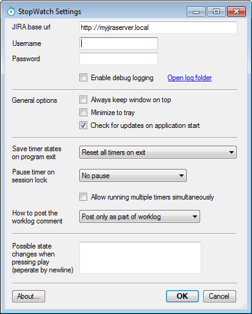
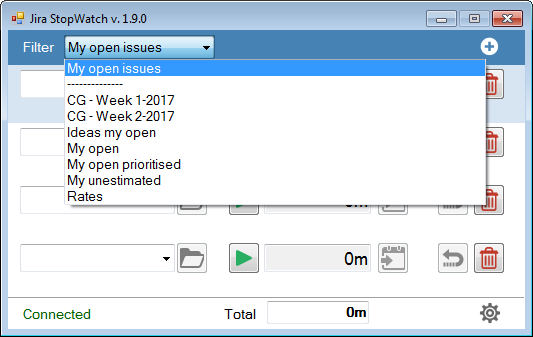
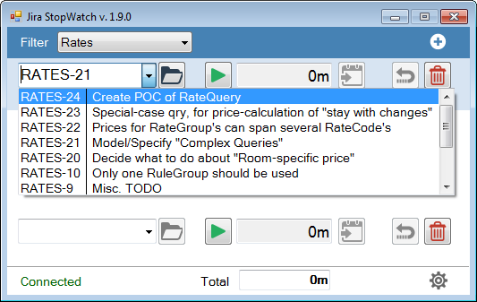
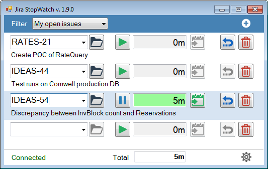
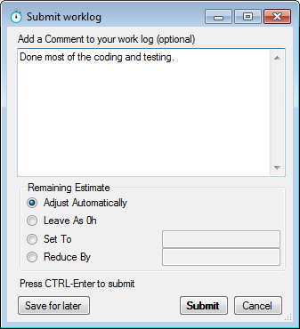

Jira StopWatch
Contents
Installing Jira StopWatch
Lastest version of Jira StopWatch can be downloaded here:
Just download the .MSI installer file and run it. Follow the instructions in the installer.
Basic setup
The first time you run Jira StopWatch, the settings dialog will automatically be shown. You can access the settings dialog at any time by clicking the gears icon in the main window's lower right corner.
As a minimum, you should type in the base URL to your Jira installation and your username and password.
If you are using a locally installed version of Jira, check with your system administrator.
If you are using Atlassian's Cloud version of Jira, your base URL is probably something like http://yourname.atlassian.net, and the username is your e-mail address.
Important note! Atlassian is migrating cloud accounts to their Atlassian ID and SSO solution. This has been known to give some connection problems when using your e-mail address as the username.
If you experience connection problems, please try this:
- Login to Jira
- Go to your profile
- See what your username name is
- Use this username instead of your e-mail address
You can read more about it in Atlassians own bugtracking and this Github issue.

Basic usage
Choosing issues to work on
The first thing you want to do is to click on the filter combobox. Here you will find your default filter My open issues along with any other filters, that you have created in Jira. Filters marked as favorites will also be displayed here.

Once you have chosen a filter, you can now fill your timer rows with Jira issues by selecting them in the respective comboboxes. The issues available are determined by the filter you chose before.
You can also simply type an issue key or you can copy/paste the url from your browser. Jira StopWatch will then extract the issue key from the url and insert it.

Using the timers
Having chosen a couple of issues, it's time to start working.
Simply press the play button on the issue, that you start working on. The time-field turns green, and the timer has now started.
Pressing play on another timer will pause the previous active one automatically. can also simply toggle between running and pause on the same timer.
The time is reported in the same format that Jira uses, eg. 2h 34m.

Submitting worklog
When you have completed some work, or just want to log your time at the end of the day, it is time to use Jira StopWatch's worklog feature.
Click on the submit button just next to the time field. Looks like this
The Submit Worklog dialog is now displayed. Here you can write a comment about, what you have done, and also adjust the remaining estimate on the issue in the same way you would do it in Jira.
When you press submit, the worklog is sent to Jira, and you will be able to see it, if you open the issue in your browser. After the worklog is sent, the timer will automatically be reset.

Keyboard shortcuts
| Key | Action |
|---|---|
| CTRL-UP | Move current timer up |
| CTRL-DOWN | Move current timer down |
| CTRL-O | Open current issue in browser |
| CTRL-P | Toggle play/pause on current timer |
| CTRL-L | Submit worklog on current timer |
| CTRL-E | Edit time on current timer (can also be done by double-cliking time field) |
| CTRL-R | Reset current timer |
| CTRL-DEL | Delete current timer |
| CTRL-N | Add new timer at the bottom of the list |
| CTRL-I | Set focus on issue combobox |
| CTRL-C | Copy issue key of current timer to clipboard |
| CTRL-V | Paste into current timer's issue combobox from clipboard (will extract and paste issue key only if possible) |
| ALT-DOWN | Open current timer's combobox |
Advanced settings
Jira StopWatch has a couple of extra goodies, that can be enabled through the settings dialog. Some of them are pretty obvious, but some need a bit of explanation.
Save timer states on program exit
By default, when Jira StopWatch is closed all your timers will be reset. However you have two other options:
- Save current timetracking, pause active timer When Jira StopWatch is closed, the recorded time on all timers will be remembered, and the next time you start StopWatch, the time will be available.
- Save current timetracking, active timer resumes As before, when Jira StopWatch is closed, the recorded time on all timers will be remembered. In addition, the active timer will still record. So if you start StopWatch 2 hours later, an additional 2 hours will be added to the active timer. This is very useful, if your work requires you to sometimes restart your computer or for some other reason you need to close StopWatch, but you still want to record your working hours.
Pause timer on session lock
This is somewhat the same timer functionality as above, only it describes behaviour when you choose to lock your desktop (eg. if you are going for lunch break).
How to post your worklog comment
Jira distinguishes between the comments added as a normal part of the conversation and comments added to a worklog. They show up differently on an issue page. Here you can choose what should happen with the comment, that you write, when submitting the recorded time.
State changes when pressing play
This feature enables you to change the state of an issue to "in progress" when pressing play on a timer.
You can add a number of commands here, separated by newline. The commands should equal the text on the buttons of your issue pages. Examples:
- In progress
- Start progress
- Feedback completed
When you press play on an issue timer, StopWatch will query the issue (through the Jira API) to see if any of the above commands are currently available. If one of them are, it will be sent.
Example: You have just received a newly created task and added it to StopWatch. On the Jira page, the status is Open. You then click the play button. If you refresh the Jira page, the status will now be In progress.
Questions and feedback
Questions, bug reports, feature requests etc. are welcome. Please use Github for this.
Or contact me at carsten@sarum.dk
License
Apache License version 2.0 - please read LICENSE.txt
Get involved!
Get the source code at Github. Pull requests are more than welcome!
Bug reports, feature requests etc. are welcome. Please use Github for this.
Or contact me at carsten@sarum.dk